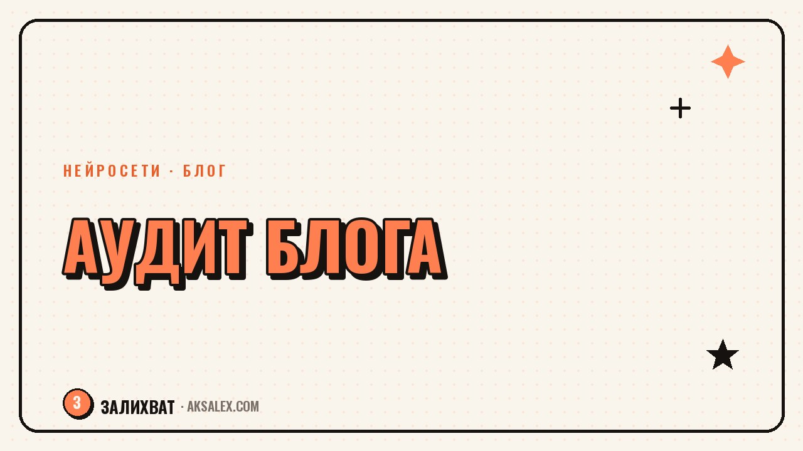

Как провести ИИ-аудит блога: что убрать, а что усилить

Блог, который ведут больше пары месяцев, обрастает рубриками, форматами и темами, часть из которых уже никому не нужна. Разобрать всё это вручную долго, а нейросеть может за один заход свести список постов, найти повторы и подсветить темы, на которые давно не было материала.
Зачем аудит, если блог и так работает
Даже если охваты стабильны, часть контента может держаться на инерции, а не приносить пользу. Аудит нужен не для того, чтобы всё сломать, а чтобы увидеть блог со стороны и понять, куда уходит время без результата.
Особенно это заметно после долгого ведения блога: рубрики множатся, темы повторяются под разными заголовками, а какие-то форматы просаживают вовлечённость месяцами, но их всё равно продолжают снимать по привычке.
- Показывает, какие темы уже исчерпаны
- Находит рубрики, которые дублируют друг друга
- Подсвечивает форматы с низкой отдачей
- Помогает выстроить контент-план без хаоса
Что собрать перед началом аудита
Аудит начинается не с нейросети, а со сбора данных. Выгрузи список опубликованных постов за последние несколько месяцев с темой каждого и, если есть, базовыми цифрами по охватам или вовлечённости.
Что понадобится
- Список тем и заголовков постов
- Рубрики или форматы, к которым они относятся
- Даты публикации
- Показатели вовлечённости, если они у тебя есть
Как нейросеть помогает найти слабые места
Когда список тем собран, отдай его нейросети и попроси сгруппировать посты по смыслу, а не по датам. Так сразу видно, какие темы повторяются под разными заголовками и где на самом деле одна и та же мысль пересказана несколько раз.
Дальше попроси сопоставить темы с показателями вовлечённости, если они есть. Это покажет, какие форматы стабильно слабее остальных - не по ощущениям, а по конкретным постам.
| Вопрос нейросети | Что это даёт |
|---|---|
| Сгруппируй темы постов по смыслу | Видно повторяющиеся и близкие темы |
| Какие рубрики почти не пересекаются с остальными | Находишь изолированные, невостребованные форматы |
| Есть ли темы без обновления полгода и больше | Список тем, которые пора освежить |
| Сравни вовлечённость по форматам | Понятно, что стабильно слабее остального |
Аудит не про то, чтобы удалить половину блога, а про то, чтобы понять, где повторяешь себя, а где давно не был.
Что делать с результатами аудита
После группировки тем становится видно три категории: то, что работает и стоит продолжать, то, что дублирует другие темы, и то, что давно не обновлялось, хотя аудитории всё ещё интересно.
- Объедини дублирующиеся темы в одну сильную рубрику
- Заброшенные, но живые темы - в ближайший контент-план
- Форматы с низкой отдачей - на паузу, а не сразу под удаление
- Сильные темы - разверни в несколько форматов
Как часто повторять аудит
Раз в квартал вполне достаточно для большинства блогов. Более частый аудит не успевает показать реальную картину, потому что тренды и вовлечённость меняются не за пару недель, а за месяцы.
Хорошее время для аудита - момент, когда чувствуешь, что контент-план стал повторяться сам с собой. Это верный признак, что пора остановиться и свериться со списком постов, а не выпускать ещё один похожий пост по инерции.
Частые вопросы
С чего начать ИИ-аудит блога, если постов очень много?
Начни с последних трёх-четырёх месяцев, а не со всей истории блога. Этого достаточно, чтобы увидеть текущие повторы и слабые темы без лишней работы.
Нужны ли точные цифры по охватам для аудита?
Желательны, но не обязательны. Даже без цифр группировка тем по смыслу уже покажет повторы и заброшенные направления, на которые давно не выходил контент.
Как понять, что рубрику пора закрывать?
Если тема месяцами не даёт откликов и дублирует другие рубрики - это повод поставить её на паузу, а не сразу удалять. Иногда достаточно сменить формат подачи.
Может ли нейросеть сама предложить новые темы после аудита?
Да, если показать ей список сильных и заброшенных тем, она предложит варианты на стыке - это удобная отправная точка для нового контент-плана.
Как часто проводить такой аудит блога?
Раз в квартал - оптимальный интервал для большинства блогов. Чаще нет смысла, реже - контент успевает накопить много повторов незамеченными.
а не вручную